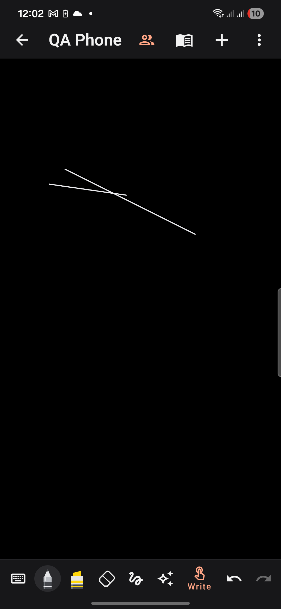
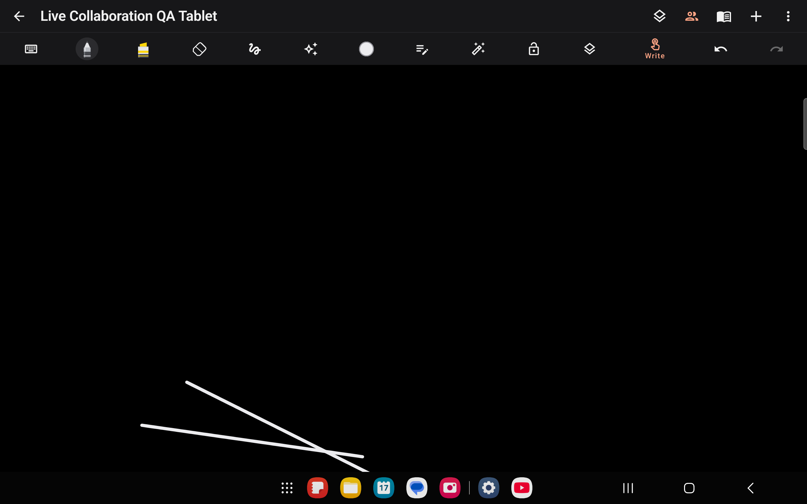
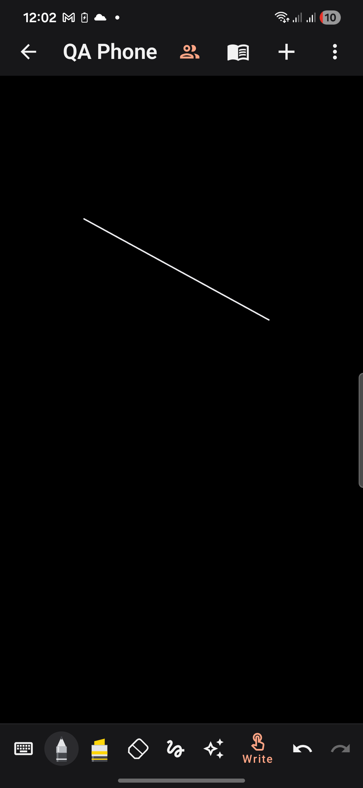
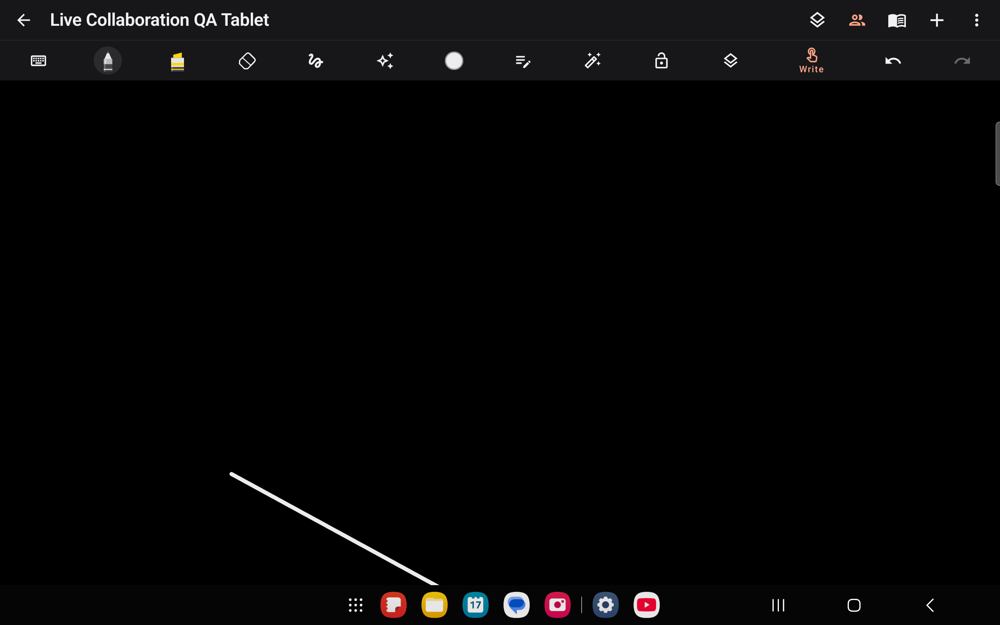

17 October 2026 · version code 29 · Google Play closed-testing candidate
The Galaxy S22 (Android 16) and Galaxy Tab S7 FE (Android 14) used Notes Preview 2.3, built from the same client source as the signed release, with a separate application ID. The original installed Drawly apps were preserved.
Approved backend deployment: 90054de0-8469-471c-b21c-bf3a75561b57. Verified through the production WebSocket endpoint at drawly.smartattendance.xyz.
| Scenario | Result |
|---|---|
| Phone to tablet: exact pen settings, pressure, tilt and geometry | Passed |
| Tablet to phone: exact ink and geometry | Passed |
| Undo preserves the other participant ink | Passed |
| Redo reaches the other device | Passed |
| Selection movement synchronizes | Passed |
| Ink on a second page stays on that page | Passed |
| Stroke eraser synchronizes | Passed |
| Undo eraser restores remote ink | Passed |
| Rejoin recovers missed strokes without duplicates | Passed |
| Offline ink is retained and sent after automatic reconnect | Passed |
| Simultaneous ink additions converge | Passed |
| A fresh client recovers all ink from server storage | Passed |
The test compares stored stroke IDs, coordinates, pressure, tilt, orientation, pen settings and page assignments. Offline testing interrupts only the QA WebSocket, keeping wireless ADB and other apps connected. Each device also round-trips its in-memory test document through the production document serializer.
Created separate notes named “Live Collaboration QA Phone” and “Live Collaboration QA Tablet” through the app UI, joined the same new room, and drew from both devices. Added a second page and wrote on it. Both app-private saved documents contained the same three strokes and two page IDs. Saving, leaving and reopening both notes retained that ink without duplication. Only the dedicated QA document files were inspected.




Live collaboration currently shares handwriting and ink edits. Text, images, audio and PDF content remain local. Remote pages are inferred from received ink: blank-page creation, page order and paper dimensions are not synchronized. Canvas-wide edits use complete state updates; simultaneous erase/move conflicts and divergent offline edits need broader beta coverage. The successful offline scenario tested the reconnecting participant’s edits while the other participant stayed idle.
This is evidence for the tested ink workflows and a closed-testing candidate, not a claim that every app feature or every concurrency pattern is production-verified. Google Play upload, app-signing certificate association and Play Console policy/release checks remain part of distribution.
tools/verify-live-collaboration.py --adb PATH --phone SERIAL --tablet SERIAL, with matching Notes Preview and Android test APKs installed on both devices. This uses isolated in-memory test documents and creates a new QA room.